R = 8.314 # numbersScientific Python Basics
Giacomo Becatti
Some Fundamentals
What is Python?
- Python is
- a high-level programming language: you think about the problem, not memory
- an interpreted language: no compile step, run line by line
- dynamically typed: variables don’t declare a type
- Slow on its own, fast when it calls compiled libraries
- That trade-off is the whole story of scientific Python
- Conceived in the 80s by Guido van Rossum (former BDFL) as a successor to ABC
- First released in 1991
- Name comes from Monty Python’s Flying Circus, not snakes (despite the symbolism
 )
)

The scientific stack
Don’t reinvent the wheel: each of these is decades of tested code
- NumPy: arrays, vectors, matrices, fast math (Harris et al. 2020)
- SciPy: ODEs, fitting, integration, statistics (Virtanen et al. 2020)
- Matplotlib: figures (Hunter 2007)
- pandas: labelled tables, CSV/Excel (McKinney 2010)
- scikit-learn: regression, classification (Pedregosa et al. 2011)
- Jupyter: interactive notebooks (Kluyver et al. 2016)
If you know Fortran or R
- Syntax
| Fortran | R | Python | |
|---|---|---|---|
| First element | a(1) |
a[1] |
a[0] |
| Loop 1..10 | do i = 1, 10 |
for (i in 1:10) |
for i in range(1, 11): |
| Blocks | end do |
{ } |
indentation |
| Comment | ! note |
# note |
# note |
If you know Fortran or R
- Arithmetic and memory
| Fortran | R | Python | |
|---|---|---|---|
| Power | x**2 |
x^2 |
x**2 |
| Integer division | -7/2 → -3 |
-7 %/% 2 → -4 |
-7 // 2 → -4 |
| Array storage | column-major | column-major | row-major (NumPy) |
Python in one slide
- Numbers
Python in one slide
- Lists: ordered and mutable
Python in one slide
- Dictionaries: look things up by name
Python in one slide
- Functions: indentation defines the block
Python in one slide
- f-strings: formatted output
R = 8.314 # numbers
temps = [280, 290, 300] # list: ordered, mutable
mass = {"C": 12.011, "O": 15.999} # dict: key -> value
def molar_mass(formula): # indentation = block
return sum(mass[el] * n for el, n in formula.items())
M_co2 = molar_mass({"C": 1, "O": 2})
print(f"CO2: {M_co2:.3f} g/mol, first T = {temps[0]} K")CO2: 44.009 g/mol, first T = 280 KThree classic traps
- Define a list
Three classic traps
- Think you are creating a copy
Three classic traps
- Think you are modifying only a copy
Three classic traps
- Realize (hopefully) your mistake
Three classic traps
- Ask for a copy when you want one
Three classic traps
- True vs. floor division (
/or//)
Three classic traps
- Power operator (
**) vs. XOR (^)
Three classic traps
- Copy vs. same object:
b = ais a second name,a.copy()is a copy - True vs. floor division:
/always gives a float,//floors - Power vs. XOR:
**is power,^is XOR
NumPy
- The fundamental package for scientific computing in Python (Harris et al. 2020)
- Provides
- a multidimensional array object and derived objects
- an assortment of routines for fast operations on arrays
Why not plain lists?
- Compute \(e^{-0.25\,t}\) on a million points, once with a Python loop
Why not plain lists?
- …and once with NumPy
import math, time
import numpy as np
t = np.linspace(0, 20, 1_000_000)
t0 = time.perf_counter()
slow = [math.exp(-0.25 * ti) for ti in t]
t1 = time.perf_counter()
fast = np.exp(-0.25 * t)
t2 = time.perf_counter()
print(f"loop: {t1-t0:.3f} s")
print(f"numpy: {t2-t1:.4f} s")
print(f"speed-up: {(t1-t0)/(t2-t1):.0f}x")loop: 0.257 s
numpy: 0.0119 s
speed-up: 22xThe loop runs in Python; np.exp runs a compiled C loop.
Array Creation
- The most basic creation is simply conversion from a list
Array Creation
- One dimensional
Array Creation
- Two dimensional
Array Creation
- Three dimensional
Array Creation
- More often, you generate arrays directly
- NumPy functions can create arrays filled with zeros
Array Creation
- More often, you generate arrays directly
- NumPy functions can create arrays filled with ones
Array Creation
- More often, you generate arrays directly
- NumPy functions can create evenly spaced values, given the step
Array Creation
- More often, you generate arrays directly
- NumPy functions can create evenly spaced values, given their number
Special arrays
- Uniformly distributed (pseudo)random numbers, from a seeded generator
Special arrays
- Diagonal matrices, given the diagonal
Special arrays
- Identity, and arrays shaped like another one
[[0.63696169 0.26978671]
[0.04097352 0.01652764]]
[[1 0 0]
[0 2 0]
[0 0 3]]
[[1. 0.]
[0. 1.]]
[[0 0]
[0 0]]Every array knows itself
- A NumPy array is more than just a collection of values:
- It is an object with its own attributes and properties.
- You can inspect these properties at any time to understand the array’s structure and contents.
Every array knows itself
- Shape: the size along each dimension
Every array knows itself
- Number of dimensions
Every array knows itself
- Data type: one for the whole array
Every array knows itself
- Size: total number of elements
Indexing
- Remember that in Python indexing starts from zero
- You can access elements by enclosing the index in square brackets
- The last element is -1
- Negative numbers count from the end
- Multiple elements can be selected through slicing
Indexing
- First, last, slices
Indexing
- In 2D: one index per dimension,
:means “all”
Indexing
- Select by condition or by a list of positions
Views vs copies
- Take a slice of an array
Views vs copies
- Modify the slice…
Views vs copies
- …and the original changed too: copy explicitly when you need independence
[ 0 100 2 3 4]Fast and memory-efficient, but a frequent source of surprises (the NumPy cousin of trap #1).
Broadcasting
- Arithmetic between arrays of different shapes, without writing loops
- Shapes are compared from the right: two dimensions fit if they are equal or one of them is 1
- A dimension of size 1 is stretched to match the other (no copy is made)
x[:, None]adds a dimension of size 1: shape(4,)becomes(4, 1)
Broadcasting
- We want to calculate decay over time \[A(t)=e^{-kt}\] for four different ks
- One time axis, four rate constants
Broadcasting
- We want to calculate decay over time \[A(t)=e^{-kt}\] for four different ks
- One time axis, four rate constants
Broadcasting
- All four decays in one line
--------------------------------------------------------------------------- ValueError Traceback (most recent call last) Cell In[39], line 4 1 t = np.linspace(0, 20, 200) 2 k = np.array([0.1, 0.25, 0.5, 1.0]) 3 ----> 4 A = np.exp(-k[:] * t) 5 print(A.shape) ValueError: operands could not be broadcast together with shapes (4,) (200,)
Broadcasting
- All four decays in one line
Broadcasting
- One row per rate constant
t = np.linspace(0, 20, 200) # (200,)
k = np.array([0.1, 0.25, 0.5, 1.0]) # (4,)
A = np.exp(-k[:, None] * t) # (4,1)*(200,) -> (4,200)
print(A.shape)
fig, ax = plt.subplots()
for ki, Ai in zip(k, A): # one row per k
ax.plot(t, Ai, label=f"k = {ki}")
ax.set_xlabel("t / s"); ax.set_ylabel("[A] / M")
ax.legend();(4, 200)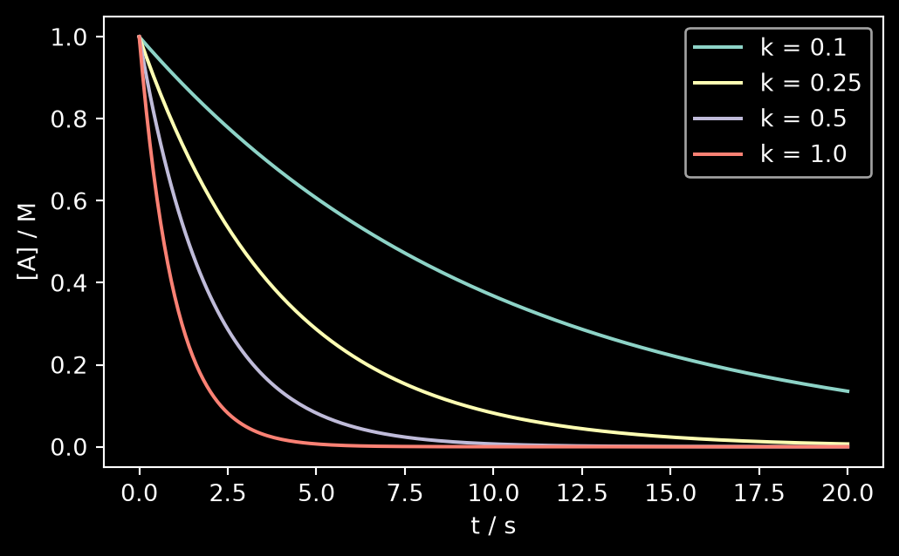
I/O Basics
- Text files: human-readable, portable
I/O Basics
- Binary
.npy: exact and fast
data = np.column_stack([t, A[1]])
# text: human-readable
np.savetxt("decay.csv", data, delimiter=",",
header="t_s,A_M", comments="")
back = np.loadtxt("decay.csv", delimiter=",", skiprows=1)
# binary: exact and fast
np.save("decay.npy", data)
back2 = np.load("decay.npy")
print(back.shape, np.allclose(back, back2))(200, 2) TrueFor real lab data with headers, units and missing values: pandas.read_csv / read_excel (see the pandas section).
Matplotlib
- The standard plotting library (Hunter 2007)
- Two ways to use it
plt.plot(...): quick, implicit “current figure”fig, ax = plt.subplots(): explicit objects, use this one
- Everything is customisable; the defaults get you 90 % of the way
Anatomy of a figure
- Figure: the whole canvas (the page)
- Axes: one plot inside it, with its own x/y axis
- One figure can hold many axes
Anatomy of a figure
plt.subplots()returns both: the Figure and its Axes
Your first plot
- Create a figure and draw a line
Your first plot
- Always label the axes, with units
Your first plot
- Add more lines, give them labels, show a legend
Your first plot
- Style: line types, markers for data, a title
t = np.linspace(0, 20, 200)
t_d = np.arange(0, 20, 2.0)
fig, ax = plt.subplots()
ax.plot(t, np.exp(-0.25 * t), label="k = 0.25")
ax.plot(t, np.exp(-0.5 * t), "--", label="k = 0.5")
ax.plot(t_d, np.exp(-0.25 * t_d), "o", label="data")
ax.set_xlabel("t / s")
ax.set_ylabel("[A] / M")
ax.set_title("First-order decay")
ax.legend();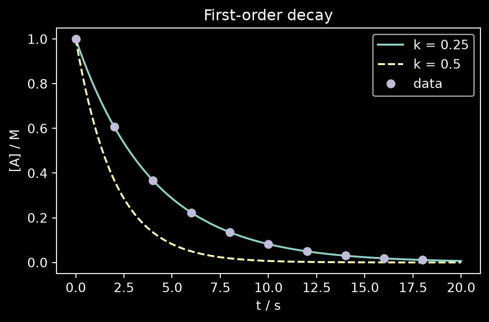
Your first plot
- Labels accept LaTeX syntax (these labels are just a demonstration)
t = np.linspace(0, 20, 200)
t_d = np.arange(0, 20, 2.0)
fig, ax = plt.subplots()
ax.plot(t, np.exp(-0.25 * t), label="k = 0.25")
ax.plot(t, np.exp(-0.5 * t), "--", label="k = 0.5")
ax.plot(t_d, np.exp(-0.25 * t_d), "o", label="data")
ax.set_xlabel(r"$\gamma$")
ax.set_ylabel(r"$\int \mathcal{D}x \,"
r"\exp\left(-i\hbar\int dx\,\mathcal{L}\right)$")
ax.set_title("First-order decay")
ax.legend();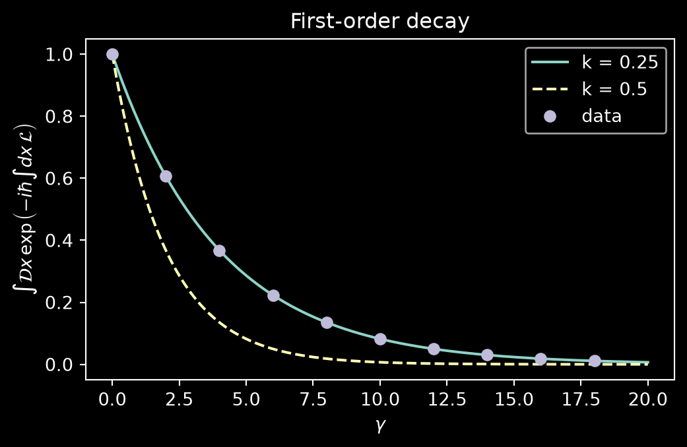
Your first plot
- Log scale: first-order decay becomes a straight line
t = np.linspace(0, 20, 200)
t_d = np.arange(0, 20, 2.0)
fig, ax = plt.subplots()
ax.plot(t, np.exp(-0.25 * t), label="k = 0.25")
ax.plot(t, np.exp(-0.5 * t), "--", label="k = 0.5")
ax.plot(t_d, np.exp(-0.25 * t_d), "o", label="data")
ax.set_xlabel("t / s")
ax.set_ylabel("[A] / M")
ax.set_title("First-order decay")
ax.set_yscale("log")
ax.legend();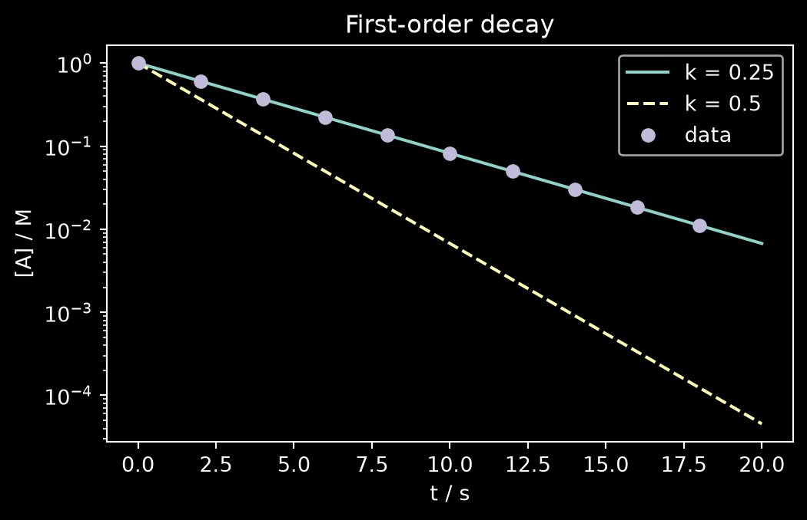
Several panels
subplots(rows, cols)returns an array of axes- Useful for plotting multiple data
Several panels
- Typical use: data + fit on top, residuals below
rng = np.random.default_rng(0)
noise = 0.02 * rng.standard_normal(t_d.size)
y_d = np.exp(-0.25 * t_d) + noise
y_fit = np.exp(-0.25 * t_d)
fig, (ax1, ax2) = plt.subplots(2, 1, sharex=True)
ax1.plot(t_d, y_d, "o")
ax1.plot(t, np.exp(-0.25 * t))
ax1.set_ylabel("[A] / M")
ax2.plot(t_d, y_d - y_fit, "o")
ax2.axhline(0, color="gray")
ax2.set_ylabel("residual")
ax2.set_xlabel("t / s");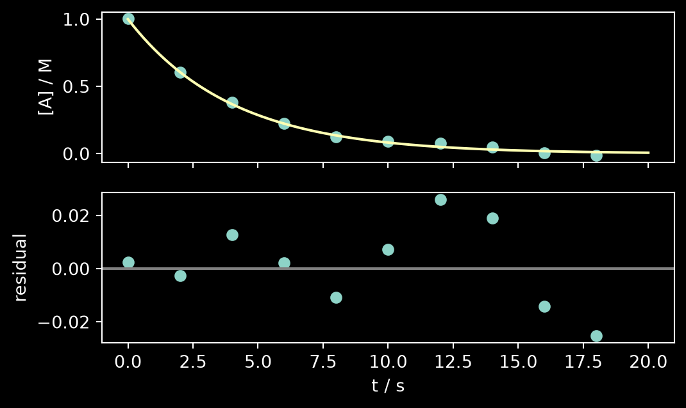
The plots you’ll actually need
- A grid of axes, indexed like a 2D array:
axs[row, col] - Histogram: distribution of values
The plots you’ll actually need
- Scatter: one variable against another
The plots you’ll actually need
- Error bars: measurements with uncertainties
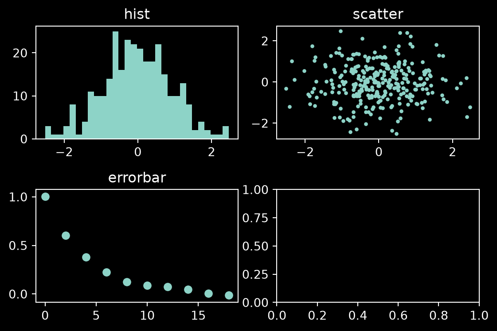
The plots you’ll actually need
- Images and 2D maps, with a colour bar
fig, axs = plt.subplots(2, 2, figsize=(6, 4))
x = rng.normal(size=300)
axs[0, 0].hist(x, bins=30)
axs[0, 0].set_title("hist")
axs[0, 1].scatter(x[:-1], x[1:], s=5)
axs[0, 1].set_title("scatter")
axs[1, 0].errorbar(t_d, y_d, yerr=0.02, fmt="o")
axs[1, 0].set_title("errorbar")
im = axs[1, 1].imshow(np.outer(np.sin(t), np.cos(t)))
axs[1, 1].set_title("imshow")
fig.colorbar(im, ax=axs[1, 1])
fig.tight_layout()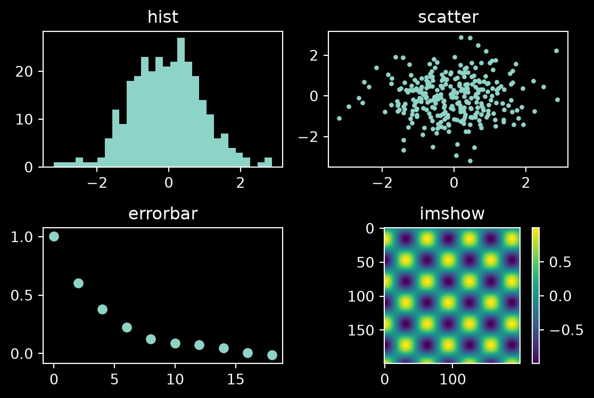
Saving figures
- Prefer vector formats (PDF, SVG) for anything printed
- If raster use a high DPI
- Save from code, not by screenshot: the figure is then reproducible
SciPy
- Algorithms built on NumPy arrays (Virtanen et al. 2020)
scipy.integrate: ODEs, numerical integrationscipy.optimize: fitting, minimisation, root findingscipy.stats: distributions, tests, regressionscipy.linalg: linear algebrascipy.constants: physical constantsscipy.special: special functions
Constants, for free
- CODATA values, in SI units
Constants, for free
- With units and uncertainty:
(value, unit, uncertainty)
Solving ODEs: A → B → C
- Example: consecutive first-order reactions
\[ \begin{aligned} \frac{dA}{dt} &= -k_1 A \\ \frac{dB}{dt} &= k_1 A - k_2 B \\ \frac{dC}{dt} &= k_2 B \end{aligned} \]
- Initial conditions: \(A(0) = 1, \; B(0) = 0, \; C(0) = 0\)
Solving ODEs: A → B → C
- Write the right-hand side \(dy/dt = f(t, y)\)
Solving ODEs: A → B → C
- Hand it to the solver with initial conditions
Solving ODEs: A → B → C
- Plot each species
from scipy.integrate import solve_ivp
def rhs(t, y, k1, k2):
A, B, C = y
return [-k1*A, k1*A - k2*B, k2*B]
sol = solve_ivp(rhs, (0, 40), [1, 0, 0],
args=(0.5, 0.15),
t_eval=np.linspace(0, 40, 400))
print(sol.y.shape)
fig, ax = plt.subplots()
for name, y in zip("ABC", sol.y):
ax.plot(sol.t, y, label=name)
ax.set_xlabel("t / s"); ax.set_ylabel("concentration / M")
ax.legend();(3, 400)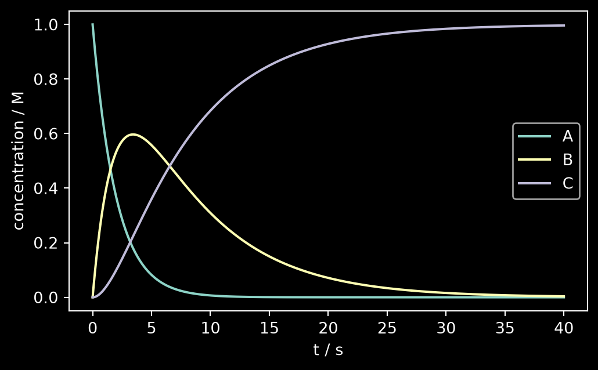
Fitting a model to data
- Some noisy “measurements”
Fitting a model to data
- Define the model, fit, get uncertainties
from scipy.optimize import curve_fit
rng = np.random.default_rng(42)
t_d = np.arange(0, 30, 2.0)
y_d = np.exp(-0.18 * t_d) \
* (1 + 0.03 * rng.standard_normal(t_d.size))
model = lambda t, A0, k: A0 * np.exp(-k * t)
p, cov = curve_fit(model, t_d, y_d, p0=[1, 0.1])
err = np.sqrt(np.diag(cov))
print(f"k = {p[1]:.3f} ± {err[1]:.3f} 1/s")k = 0.182 ± 0.002 1/sFitting a model to data
- Plot data and fit together
from scipy.optimize import curve_fit
rng = np.random.default_rng(42)
t_d = np.arange(0, 30, 2.0)
y_d = np.exp(-0.18 * t_d) \
* (1 + 0.03 * rng.standard_normal(t_d.size))
model = lambda t, A0, k: A0 * np.exp(-k * t)
p, cov = curve_fit(model, t_d, y_d, p0=[1, 0.1])
err = np.sqrt(np.diag(cov))
fig, ax = plt.subplots()
ax.plot(t_d, y_d, "o")
ax.plot(t_d, model(t_d, *p))
ax.set_xlabel("t / s"); ax.set_ylabel("[A] / M")
ax.set_title(f"k = {p[1]:.3f} ± {err[1]:.3f} 1/s");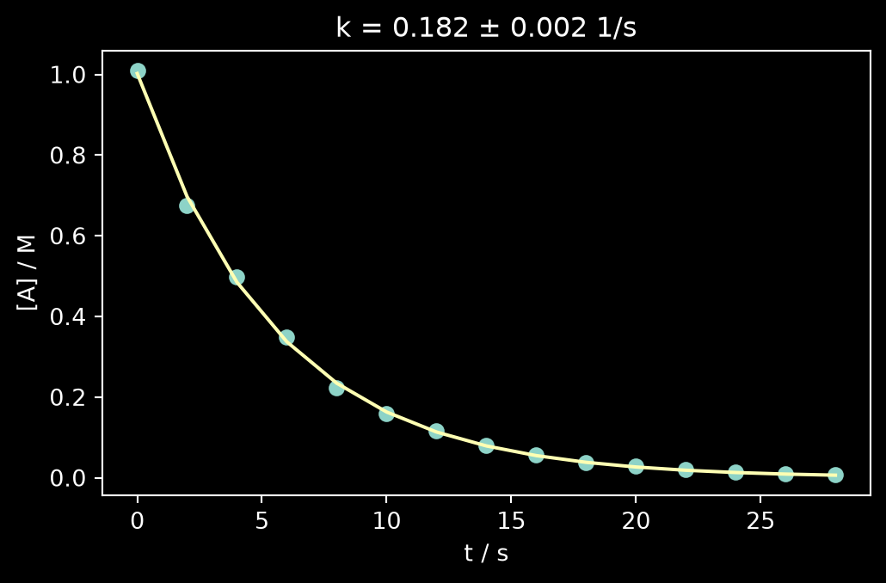
Special Functions
scipy.special: the functions of mathematical physics, ready to use- Bessel, Airy, Legendre, Hermite, Laguerre, gamma, error function, …
- Vectorised like NumPy: pass an array, get an array
Special Functions
- Bessel functions
Special Functions
- Airy functions
Special Functions
- Legendre polynomials
Special Functions
- Many more… (click “Code” to see how)
Code
from scipy.special import (eval_chebyt, hermite,
eval_laguerre)
x = np.linspace(-1, 1, 500)
fig, ax = plt.subplots(1, 3)
# Chebyshev polynomials
for n in range(5):
ax[0].plot(x, eval_chebyt(n, x), label=f'$T_{n}(x)$')
ax[0].set_title('Chebyshev polynomials')
# Hermite polynomials
for n in range(4):
ax[1].plot(x, hermite(n)(x), label=f'$H_{n}(x)$')
ax[1].set_title('Hermite polynomials')
# Laguerre polynomials
x_pos = np.linspace(0, 10, 500)
for n in range(4):
ax[2].plot(x_pos, eval_laguerre(n, x_pos),
label=f'$L_{n}(x)$')
ax[2].set_title('Laguerre polynomials')
for a in ax:
a.grid(alpha=0.3)
a.legend(fontsize=7)
a.set_xlabel('$x$')
fig.tight_layout()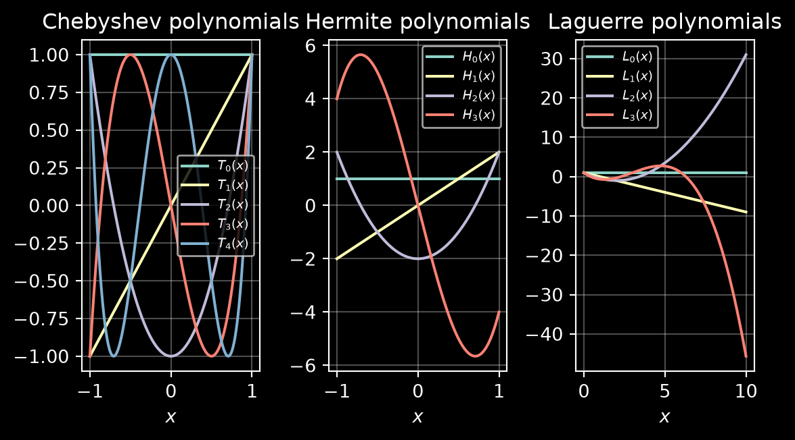
pandas
- Labelled tables (
DataFrame) built on NumPy arrays (McKinney 2010) - Columns have names (put the units in them!), rows have an index
- Reads CSV, Excel, HDF5, … in one line
A table from a file
- Read back the file we wrote in the NumPy section
Columns and rows
- Every column has a name
Columns and rows
- Select rows with a boolean mask, exactly as in NumPy
Columns and rows
- New columns are vectorised
Columns and rows
- Mind the brackets: scikit-learn wants
X2D andy1D
['t_s', 'A_M']
200 10
(200,)
(200, 2)scikit-learn
- Machine learning with one consistent interface (Pedregosa et al. 2011)
- Every model is an estimator, used in the same three steps
Xis always 2D: (samples, features);yis 1D
The estimator interface
- Create the model, choosing its options
The estimator interface
- Learn the parameters from the training data
The estimator interface
- Predict new data, and score the predictions
Swap SomeModel for any other estimator: the rest of the code does not change.
Train, then test
- Fit on a training set, judge on a test set the model has never seen
- Training error: how well the model describes the data it saw
- Test error: how well it predicts, which is the point of the exercise
- Never report a training error as if it were a prediction
Regression: alkane boiling points
- Boiling points of the n-alkanes, C1 to C20
Regression: alkane boiling points
- Learn from C1–C12, predict C13–C20 (extrapolation: the hard case)
bp_C = [-161.5, -88.6, -42.1, -0.5, 36.1,
68.7, 98.4, 125.6, 150.8, 174.1,
196.0, 216.3, 235.4, 253.5, 270.6,
286.8, 302.0, 316.3, 330.0, 343.0]
df = pd.DataFrame({"n_C": range(1, 21),
"bp_K": np.array(bp_C) + 273.15})
train = df[df.n_C <= 12] # learn C1–C12
test = df[df.n_C > 12] # predict C13–C20
X_tr, y_tr = train[["n_C"]], train["bp_K"] # X: 2D [[ ]]
X_te, y_te = test[["n_C"]], test["bp_K"] # y: 1D [ ]A polynomial model
PolynomialFeatures(deg)turns \(n\) into the columns \(1, n, n^2, \dots, n^\mathrm{deg}\)LinearRegression()fits one coefficient per columnmake_pipelinechains them into a single estimator:fitandpredictrun both steps
A polynomial model
- Build it once, use it like any estimator
from sklearn.pipeline import make_pipeline
from sklearn.preprocessing import PolynomialFeatures
from sklearn.linear_model import LinearRegression
from sklearn.metrics import root_mean_squared_error as rmse
def poly_model(deg):
return make_pipeline(PolynomialFeatures(deg),
LinearRegression())
n_all = pd.DataFrame({"n_C": np.linspace(1, 20, 200)})More flexible ≠ better
- A straight line: right trend, systematically off
fig, ax = plt.subplots()
ax.plot(df.n_C, df.bp_K, "wo", ms=3)
for deg in (1,):
m = poly_model(deg).fit(X_tr, y_tr)
e_tr = rmse(y_tr, m.predict(X_tr))
e_te = rmse(y_te, m.predict(X_te))
ax.plot(n_all.n_C, m.predict(n_all),
label=f"deg {deg}: train {e_tr:.0f} K, "
f"test {e_te:.0f} K")
ax.axvspan(12.5, 20.5, alpha=0.15) # test region
ax.set_xlabel("carbon atoms")
ax.set_ylabel(r"$T_\mathrm{b}$ / K")
ax.set_ylim(0, 800); ax.legend(fontsize=8);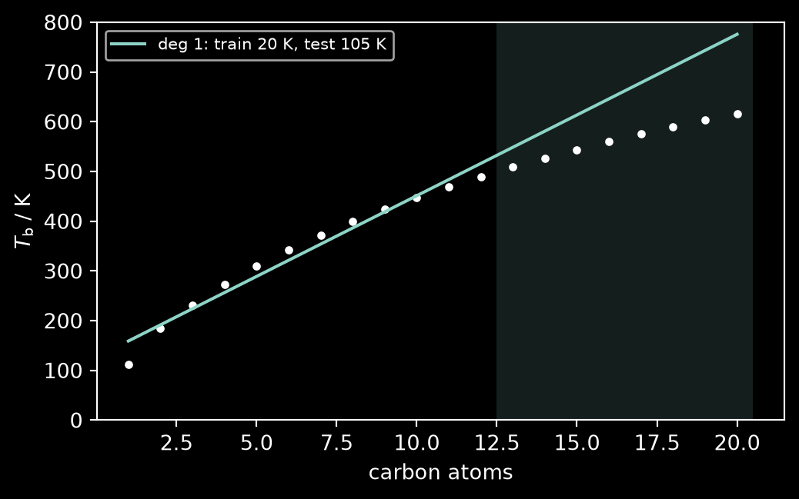
More flexible ≠ better
- A parabola: better on both sets
fig, ax = plt.subplots()
ax.plot(df.n_C, df.bp_K, "wo", ms=3)
for deg in (1, 2):
m = poly_model(deg).fit(X_tr, y_tr)
e_tr = rmse(y_tr, m.predict(X_tr))
e_te = rmse(y_te, m.predict(X_te))
ax.plot(n_all.n_C, m.predict(n_all),
label=f"deg {deg}: train {e_tr:.0f} K, "
f"test {e_te:.0f} K")
ax.axvspan(12.5, 20.5, alpha=0.15) # test region
ax.set_xlabel("carbon atoms")
ax.set_ylabel(r"$T_\mathrm{b}$ / K")
ax.set_ylim(0, 800); ax.legend(fontsize=8);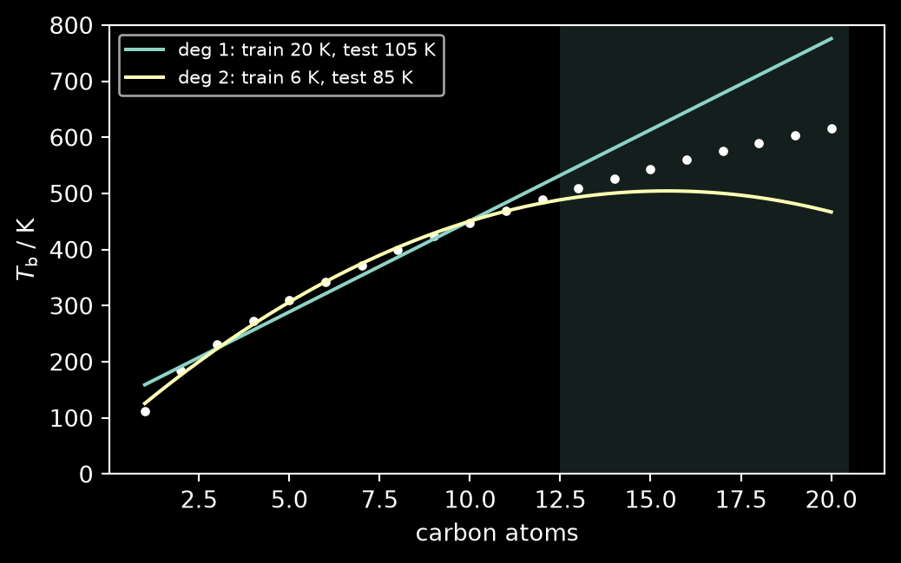
More flexible ≠ better
- Degree 4: best on the training data…
fig, ax = plt.subplots()
ax.plot(df.n_C, df.bp_K, "wo", ms=3)
for deg in (1, 2, 4):
m = poly_model(deg).fit(X_tr, y_tr)
e_tr = rmse(y_tr, m.predict(X_tr))
e_te = rmse(y_te, m.predict(X_te))
ax.plot(n_all.n_C, m.predict(n_all),
label=f"deg {deg}: train {e_tr:.0f} K, "
f"test {e_te:.0f} K")
ax.axvspan(12.5, 20.5, alpha=0.15) # test region
ax.set_xlabel("carbon atoms")
ax.set_ylabel(r"$T_\mathrm{b}$ / K")
ax.set_ylim(0, 800); ax.legend(fontsize=8);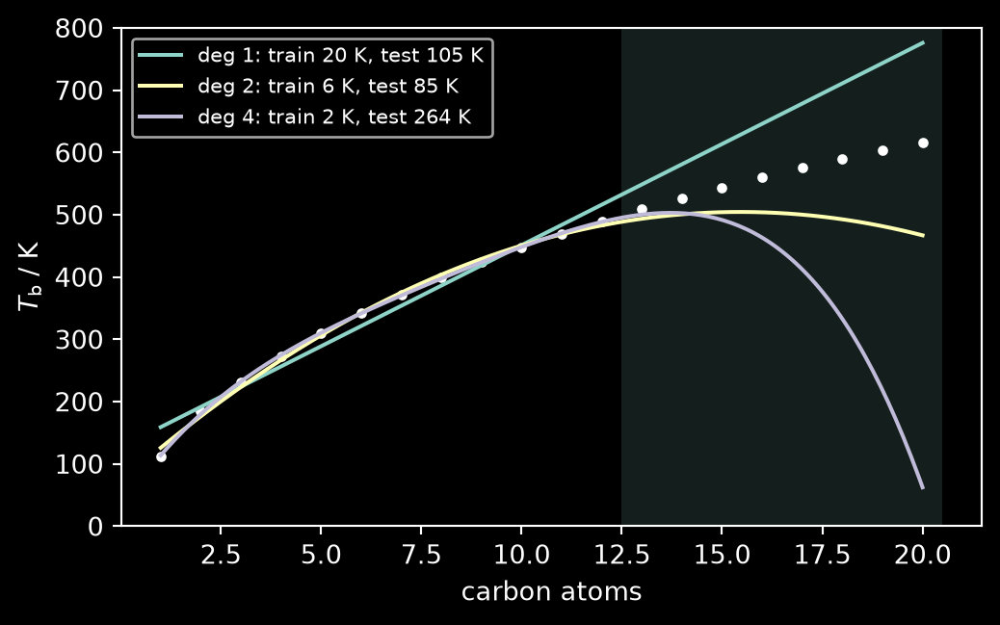
…worst on the test data.
Overfitting
- Degree 1 → 2 → 4: training error 20 → 6 → 2 K
- Test error 105 → 85 → 264 K
- Lower training error, worse predictions: overfitting
- The flexible model learned the training points, not the trend
Why is ML difficult?
The notebook takes this apart in a controlled setting (Mehta et al. 2019)
- Data you generate yourself: \(y_i = f(x_i) + \eta_i\), noise of size \(\sigma\)
- Models: polynomials of degree 1, 3 and 10
- Judge: mean squared error on fresh test data, inside and outside the training range
Why is ML difficult?
Knobs to turn
- How many training points \(N\)?
- How much noise \(\sigma\)?
- Is the true \(f\) inside the model class or not?
Jupyter Notebooks
- Documents mixing code, output, and text with LaTeX (Kluyver et al. 2016)
- Code runs in a kernel: a Python process that remembers what you ran
- …in the order you ran it, not the order on the page
Markdown cells
- Every cell is either code or Markdown
Esc→M: make it Markdown ·Esc→Y: back to codeShift+Enterrenders it · double-click to edit again
- Markdown turns a notebook into a lab notebook: what you did, why, and what you concluded
- Rule of thumb: a reader should follow the story without reading the code
Writing a Markdown cell
Kinetics of A → B
Measured at 298 K in ethanol.
- Headings with
#,**bold**,*italic*
Writing a Markdown cell
Kinetics of A → B
Measured at 298 K in ethanol.
- 3 runs, averaged
- raw data in
decay.csv
- Lists with
-, inline code with backticks
Writing a Markdown cell
Kinetics of A → B
Measured at 298 K in ethanol.
- 3 runs, averaged
- raw data in
decay.csv
Rate law: \([A] = [A]_0 e^{-kt}\), and
\[ k(T) = A\, e^{-E_a/RT} \]
- LaTeX:
$...$inline,$$...$$displayed
Writing a Markdown cell
| run | k / s⁻¹ |
|---|---|
| 1 | 0.181 |
| 2 | 0.179 |
Method from the SciPy docs.
- Tables with
|, links with[text](url), images with
Markdown cheat sheet
| You type | You get |
|---|---|
# Title, ## Section |
headings |
**bold**, *italic* |
bold, italic |
- item / 1. item |
bullet / numbered list |
`code` |
code |
$E = mc^2$ |
\(E = mc^2\) |
$$\int_0^\infty e^{-x}dx$$ |
displayed equation |
[text](url) |
link |
 |
image |
> note |
quote / callout |
The hidden-state trap
- Cell 1 sets a value
The hidden-state trap
- Cell 2 uses it: run it three times…
Rule: Kernel → Restart & Run All before you trust a result.
Survival kit
| Keys | Action |
|---|---|
Shift+Enter |
run cell, move on |
Esc → A / B |
new cell above / below |
Esc → M / Y |
Markdown / code cell |
Esc → D, D |
delete cell |
Tab, Shift+Tab |
autocomplete, show docs |
?np.linspace |
help |
Where to run it
- JupyterLab or VS Code on your own machine
- Google Colab: nothing to install
- In this course: the BW JupyterHub
Hands-on
Open NB_CII-ML_is_difficult_exercise.ipynb
- ★ warm-up: functions, arrays and a first plot of noisy data
- ★★ core: fit polynomials, test them, then change \(N\), \(\sigma\) and the true \(f\)
- ★★★ if you’re ahead: learning curves,
curve_fitwith the right features, back to the alkanes - Answer the questions in Markdown cells; Restart & Run All before you hand it in
References
Harris, Charles R., K. Jarrod Millman, Stéfan J. van der Walt, et al. 2020. “Array Programming with NumPy.” Nature 585: 357–62. https://doi.org/10.1038/s41586-020-2649-2.
Hunter, John D. 2007. “Matplotlib: A 2D Graphics Environment.” Computing in Science & Engineering 9 (3): 90–95. https://doi.org/10.1109/MCSE.2007.55.
Kluyver, Thomas, Benjamin Ragan-Kelley, Fernando Pérez, et al. 2016. “Jupyter Notebooks – a Publishing Format for Reproducible Computational Workflows.” Positioning and Power in Academic Publishing: Players, Agents and Agendas, 87–90. https://doi.org/10.3233/978-1-61499-649-1-87.
McKinney, Wes. 2010. “Data Structures for Statistical Computing in Python.” Proceedings of the 9th Python in Science Conference, 56–61. https://doi.org/10.25080/Majora-92bf1922-00a.
Mehta, Pankaj, Marin Bukov, Ching-Hao Wang, et al. 2019. “A High-Bias, Low-Variance Introduction to Machine Learning for Physicists.” Physics Reports 810: 1–124. https://doi.org/10.1016/j.physrep.2019.03.001.
Pedregosa, Fabian, Gaël Varoquaux, Alexandre Gramfort, et al. 2011. “Scikit-Learn: Machine Learning in Python.” Journal of Machine Learning Research 12: 2825–30.
Virtanen, Pauli, Ralf Gommers, Travis E. Oliphant, et al. 2020. “SciPy 1.0: Fundamental Algorithms for Scientific Computing in Python.” Nature Methods 17: 261–72. https://doi.org/10.1038/s41592-019-0686-2.